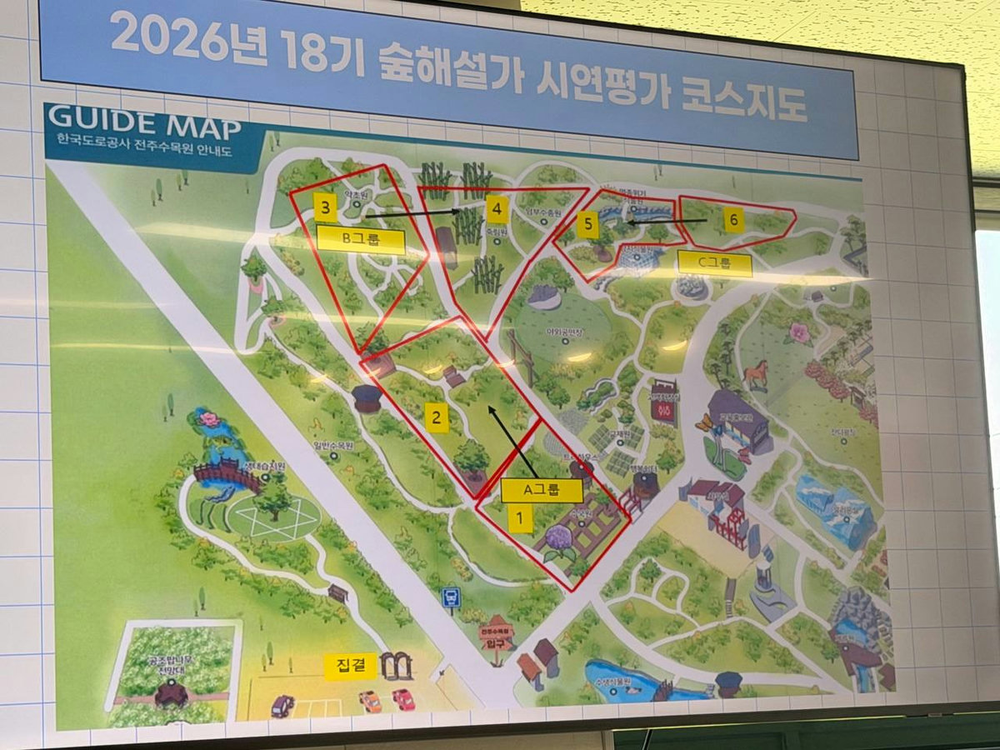

빨간 강조 영역: 6조 담당 A그룹 2번 식생조사 범위
파란 점선: 시연 동선상 1번 구역에서 2번 구역으로 이어지는 흐름
노란 번호: 지도 원본의 2번 구역 표시
식생조사 선정분 20종
목본 14종
- 살구나무
- 흰매실나무
- 느티나무
- 팽나무
- 괴불나무
- 때죽나무
- 명자나무
- 뽕나무
- 히어리
- 네군도단풍
- 라나스덜꿩나무
- 회화나무
- 야광나무
- 가래나무
초본 6종
- 보리사초
- 실유카
- 양하
- 자주천인국
- 멜람포디움
- 오레가노(꽃박하)
선정분 목록의 작업 기준을 그대로 반영했습니다. 과제 기준은 목본 15·초본 5이므로, 제출본에서는 목본 후보 1종을 추가하거나 초본 후보 1종을 제외하는 방식으로 수량을 맞추는 것이 좋습니다.
발표·해설 연결 포인트
| 묶음 | 지도에서 설명할 포인트 |
|---|---|
| 장미과 | 살구나무, 흰매실나무, 명자나무, 야광나무 등 꽃·열매 비교가 쉬운 묶음 |
| 큰 교목 | 느티나무, 팽나무, 회화나무는 마을숲·노거수 문화와 연결 가능 |
| 관목류 | 괴불나무, 라나스덜꿩나무, 히어리는 잎 배열·꽃차례·보전 가치 설명에 적합 |
| 초본·허브 | 보리사초, 양하, 자주천인국, 멜람포디움, 오레가노는 생활 속 식물 이야기로 연결 |